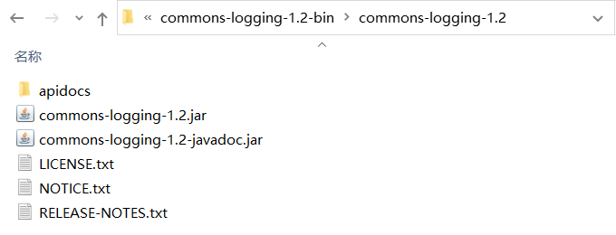
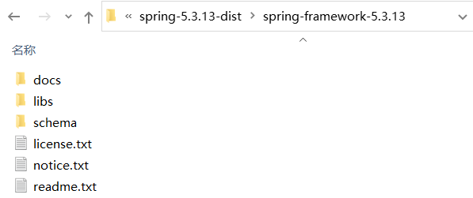

Spring开发环境搭建
使用 Spring 之前，需要先安装 JDK、Tomcat 和 Eclipse，本节主要介绍如何搭建 Spring 开发环境，
您可以在 Oracle 网站上下载最新版本的 JDK，然后按照下载文件中的说明安装和配置 JDK。
配置环境变量需要修改 PATH 和 JAVA_HOME 的值，通常为 java_install_dir/bin（JDK 安装目录下bin目录的路径）和 java_install_dir（JDK安装目录）。
对于 Windows 系统，您可以鼠标右键“我的电脑”，选择“属性”->“高级”->“环境变量”，修改 PATH 值，并单击“确定”按钮。
对于 Unix（Solaris、Linux 等）系统，如果 JDK 安装在 /usr/local/jdk 1.8.0_241 中，且使用的是 CShell，则需要将以下内容添加到 .cshrc 文件中。
关于 Eclipse 下载和安装的详细步骤我们已经在《Java 教程》中进行了介绍，本文只做简单描述，不了解的读者请转到：Eclipse 下载安装教程
Eclipse 下载地址：https://www.eclipse.org/downloads/
下载文件后，将压缩包解压到相应位置。例如 Windows 上的 C:\ eclipse、Linux / Unix 上的 /usr/local/eclipse。
在 Windows 中，可以通过以下 DOS 命令或者双击 eclipse.exe 来启动 Eclipse。
Apache Common Logging API 下载地址：https://commons.apache.org/proper/commons-logging/download_logging.cgi
下载完成后，将压缩包解压到相应位置。例如 Windows 上的 C:\ commons-logging-1.2、Linux / Unix 上的 /usr/local/commons-logging-1.2 等。该文件包含以下 jar 文件和其它支持文档，目录结构如下。
根据操作系统（Windows或Unix）下载相应的 Spring 压缩包。本教程使用版本为 spring-5.3.13-dist.zip（当前最高稳定版本），其目录结构如下：
下面对上图所示的目录进行简单介绍，具体如下表所示。
在 libs 目录中，包含了 Spring 框架提供的所有 jar 文件，其中有 4 个 jar 文件是 Spring 框架的基础包，分别对应 Spring 容器的四个模块，具体如下表所示。
使用 Spring 框架时，只需将 Spring 的 4 个基础包以及 commons-logging-1.2.jar 包复制到项目的 lib 目录，并发布到类路径中即可。
安装 JDK
JDK 安装和配置的详细步骤我们已经在《Java 教程》中进行了介绍，本文只做简单描述，不了解的读者请转到：您可以在 Oracle 网站上下载最新版本的 JDK，然后按照下载文件中的说明安装和配置 JDK。
配置环境变量需要修改 PATH 和 JAVA_HOME 的值，通常为 java_install_dir/bin（JDK 安装目录下bin目录的路径）和 java_install_dir（JDK安装目录）。
对于 Windows 系统，您可以鼠标右键“我的电脑”，选择“属性”->“高级”->“环境变量”，修改 PATH 值，并单击“确定”按钮。
对于 Unix（Solaris、Linux 等）系统，如果 JDK 安装在 /usr/local/jdk 1.8.0_241 中，且使用的是 CShell，则需要将以下内容添加到 .cshrc 文件中。
setenv PATH /usr/local/jdk1.8.0_241/bin:$PATH
setenv JAVA_HOME /usr/local/jdk1.8.0_241
下载 Eclipse IDE
本教程中所有实例都是使用 Eclipse IDE 编写的，因此我们建议您安装一个最新版本的 IDE，本教程使用版本为 Eclipse 2019。关于 Eclipse 下载和安装的详细步骤我们已经在《Java 教程》中进行了介绍，本文只做简单描述，不了解的读者请转到：Eclipse 下载安装教程
Eclipse 下载地址：https://www.eclipse.org/downloads/
下载文件后，将压缩包解压到相应位置。例如 Windows 上的 C:\ eclipse、Linux / Unix 上的 /usr/local/eclipse。
在 Windows 中，可以通过以下 DOS 命令或者双击 eclipse.exe 来启动 Eclipse。
%C:\eclipse\eclipse.exe
在 Unix（Solaris、Linux等）中，可执行以下命令来启动 Eclipse。$/usr/local/eclipse/eclipse
下载 Apache Common Logging
Common Logging 是使用 Spring 的必要组件。Apache Common Logging API 下载地址：https://commons.apache.org/proper/commons-logging/download_logging.cgi
下载完成后，将压缩包解压到相应位置。例如 Windows 上的 C:\ commons-logging-1.2、Linux / Unix 上的 /usr/local/commons-logging-1.2 等。该文件包含以下 jar 文件和其它支持文档，目录结构如下。

图1：commons-logging 目录结构
图1：commons-logging 目录结构
下载 Spring
Spring 下载地址：https://repo.spring.io/release/org/springframework/spring/根据操作系统（Windows或Unix）下载相应的 Spring 压缩包。本教程使用版本为 spring-5.3.13-dist.zip（当前最高稳定版本），其目录结构如下：

图1：Spring 目录结构
图1：Spring 目录结构
下面对上图所示的目录进行简单介绍，具体如下表所示。
| 名称 | 作用 |
|---|---|
| docs | 包含 Spring 的 API 文档和开发规范 |
| libs | 包含开发需要的 jar 包和源码包 |
| schema | 包含开发所需要的 schema 文件，在这些文件中定义了 Spring 相关配置文件的约束 |
在 libs 目录中，包含了 Spring 框架提供的所有 jar 文件，其中有 4 个 jar 文件是 Spring 框架的基础包，分别对应 Spring 容器的四个模块，具体如下表所示。
| 名称 | 作用 |
|---|---|
| spring-core-x.x.xx.jar | 包含 Spring 框架基本的核心工具类，Spring 其他组件都要用到这个包中的类，是其他组件的基本核心。 |
| spring-beans-x.x.xx.jar | 所有应用都要用到的，它包含访问配置文件、创建和管理 Bean 以及进行 Inversion of Control（IoC）或者 Dependency Injection（DI）操作相关的所有类。 |
| spring-context-x.x.xx.jar | Spring 提供在基础 IoC 功能上的扩展服务，此外还提供许多企业级服务的支持，如邮件服务、任务调度、JNDI 定位、EJB 集成、远程访问、缓存以及各种视图层框架的封装等。 |
| spring-expression-x.x.xx.jar |
定义了 Spring 的表达式语言。 需要注意的是，在使用 Spring 开发时，除了 Spring 自带的 JAR 包以外，还需要一个第三方 JAR 包 commons.logging 处理日志信息。 |
使用 Spring 框架时，只需将 Spring 的 4 个基础包以及 commons-logging-1.2.jar 包复制到项目的 lib 目录，并发布到类路径中即可。
关注公众号「站长严长生」，在手机上阅读所有教程，随时随地都能学习。内含一款搜索神器，免费下载全网书籍和视频。

微信扫码关注公众号